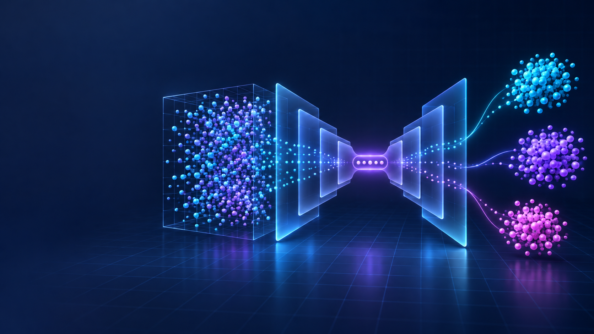

How representation learning turns high-dimensional data into clustering-friendly structure
Based on Leiber, Miklautz, Plant & Böhm (arXiv:2504.02087v2)Images, text, tabular records
A compact nonlinear embedding
Compact groups and clearer boundaries
Train the autoencoder, then cluster the embedding. Simple and modular.
Update the representation and cluster assignments in turn.
Optimize reconstruction and clustering together.
Keeps decoded samples close to the input. Useful when preserving information matters.
Pulls the embedding toward compact, separable or task-specific groups.
| AE + k-Means | Easy baseline | No task feedback after embedding |
| N2D | Uses a learned manifold | New-sample prediction is awkward |
| DEC / IDEC | Shapes latent space | Sensitive to initialization and loss balance |
| DCEC | Convolutional bias | More tied to image-like inputs |
| DKM | Deep k-Means objective | Requires careful optimization choices |
| External | ARI, NMI, ACC | Do groups align with known labels? |
| Internal | Silhouette, WCSS | Are points compact and separated? |
| Robustness | Seeds, perturbations | Does the solution survive randomness? |
| Practical | Inference, scalability | Can the model label new samples? |
Separate semantic structure from nuisance variation?
Decide k without labels?
Keep clusters meaningful as data moves?
Report stability and compute cost consistently?
1Start with AE + k-Means as a transparent baseline
2Add clustering feedback only when the baseline exposes a real failure
3Report metrics, seeds, ablations and deployment behavior together
4Treat the latent space as a modeling decision, not a visualization afterthought